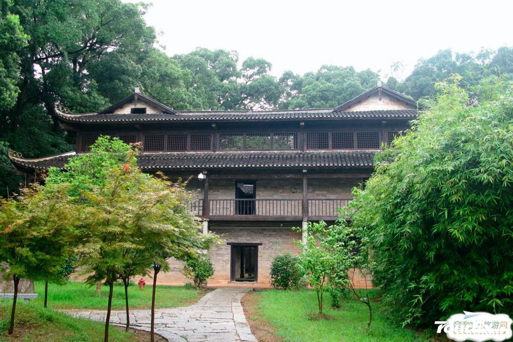
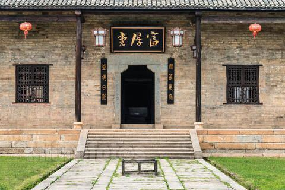
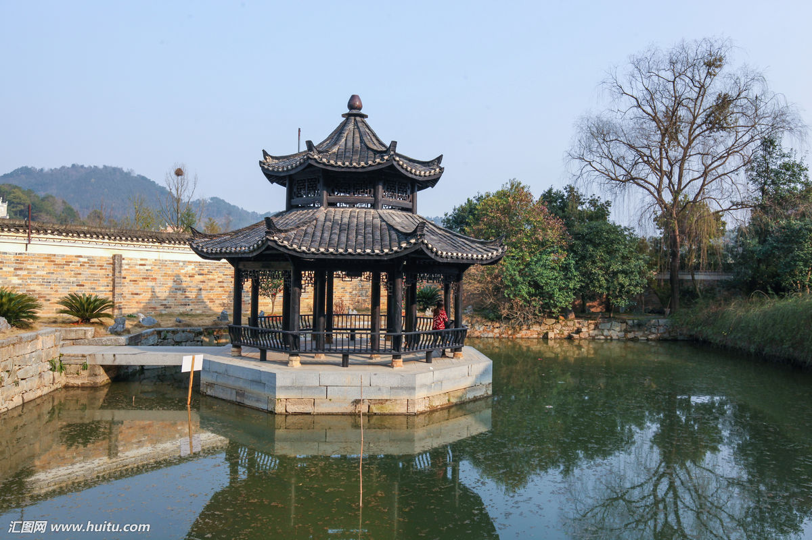
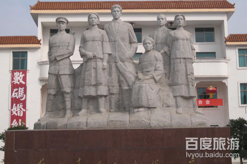
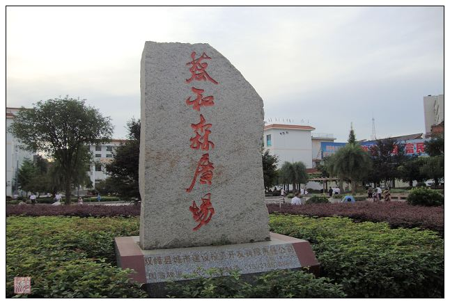
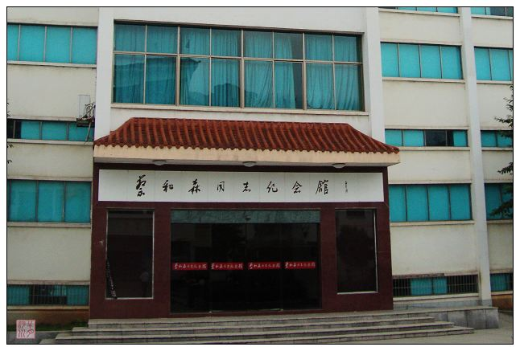

双峰文化底蕴厚重，旅游资源十分丰富，近年来，县委政府致力打造旅游强县，
做大做强旅游文章，形成了独具特色的“古色、红色、绿色”三大旅游版块。
古色”旅游。清代中兴名臣曾国藩的故居“富厚堂”就位于我县荷叶镇。
<其始建于清同治四年，占地面积四万多平方米，建筑面积一万余平方米，
是一座典型的明清风格建筑，系中国保存至今最为完整的“乡间侯府”。



与镇内曾氏其他兄弟的白玉堂、黄金堂、敦德堂、奖善堂、万宜堂、文吉堂、
修善堂、华祝堂、有恒堂合称“曾氏十堂”。“富厚堂”是国家重点文物保护单位，
新潇湘八景之一。故居内有四座藏书楼，是中国目前保存最完好、规模最大的私家书楼之一。
涵盖经、史、子、集和各个地方志及外国科技文化等类别图书三十多万卷，堪与中国近代四大藏书楼齐名。
同时，曾国藩故居所在的荷叶镇及周边乡镇，历史文化旅游景点星罗棋布，已发现的有50余处，
如中华百年“八大女杰”之一的秋瑾故居、“天子坪地下军事工程”、“同福石林”、“石鸡寨”、
“葛氏宗祠”、“三国蜀相蒋琬故居遗址”、“罗泽南故居”等共同构建名人故里。
名人故里的旅游开发将与新化紫鹊界秦人梯田、梅山龙宫构建娄底旅游的“东西两翼”。
“红色”旅游。以蔡和森纪念馆为中心的红色旅游板块，是我省重要的红色旅游基地，
也是我省首批省级爱国主义教育基地，系娄底市红色旅游龙头品牌。
蔡和森纪念馆兴建于1986年，建筑面积1972平方米。


